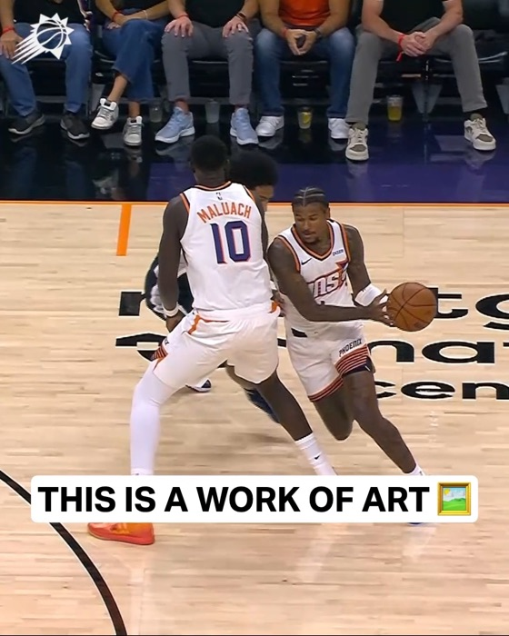
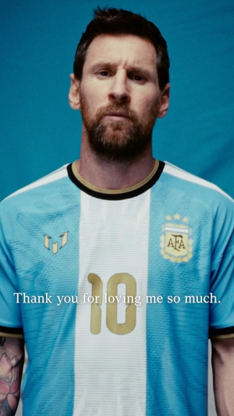

Maqueta con imágenes de ejemplo. Los números (ideas 1–12) están explicados abajo.
★Estás en Tus ideas guardadas
Tus tableros
Las ideas que quieres hacer, ordenadas para tu equipo. ①
↗ Compartir＋ Nuevo tablero
Posts guardados7
Tableros3
Redes3 4
4 2
2 1
1
421Último guardadoHoy


Todo lo guardado7 posts · hoy
Ver todo →Del tablero al calendario
Convierte tus ideas en la semana
Arrastra posts guardados a un día y tendrás tu plan de contenido listo.
 Ma
Ma JuViDo
JuViDo★ Fijado✎↗⋯

⚽Match day3 posts · hace 2 días21ReelsPrevia
21ReelsPrevia✎↗⋯

🎨Diseño2 posts · hace 2 días2Carrusel
2Carrusel✎↗⋯

📌Ejemplo3 posts · hoy12
12
＋Nuevo tablero
Nombre del tableroCrear
FichajesPatrocinadoresBehind the scenesPrevias
Tableros inteligentes Se llenan solos con lo que guardas ⑩
▶
Tus Reels y TikToks5 vídeos guardados
⚡
Guardado esta semana4 posts nuevos
✓
Ya planificados3 en tu calendario
Ideas parecidas a las que guardas Recomendadas de la biblioteca ⑪
Ideas de mejora
①Cabecera a la altura de la webDistintivo "Estás en", título con el dorado degradado de la marca y una frase de para qué sirve.
②Resumen en tarjetasPosts guardados, tableros, redes (con logos y cuántos de cada una) y último guardado.
③Buscar y ordenarBuscar en todos los tableros y ordenar por recientes, A–Z o los que tienen más posts.
④"Todo lo guardado" destacadoGrande, con mosaico de 5 fotos y "Ver todo", en lugar de un tablero más.
⑤Del tablero al calendarioUn acceso directo para llevar lo guardado al Plan de contenido de la semana (la función ya existe en la web).
⑥Tarjetas de tablero premiumMosaico de 3 fotos, se elevan al pasar el ratón con brillo dorado; nombres en formato normal (no en MAYÚSCULAS).
⑦Acciones rápidasAl pasar el ratón: renombrar, compartir y más (borrar, cambiar portada) sin entrar en el tablero.
⑧Qué hay dentro de un vistazoLogos de las redes con cuántos posts, formato y temática más repetidos; tablero fijado arriba y emoji opcional.
⑨Crear tablero más fácilTarjeta clara con sugerencias de nombre (Fichajes, Patrocinadores, Previas…) con un clic.
⑩Tableros inteligentesSe llenan solos: tus vídeos, lo guardado esta semana y lo ya planificado.
⑪Ideas parecidasRecomendaciones de la biblioteca según lo que guardas: más tiempo en la web y más ideas.
⑫Arreglos que ya se ven ahora"hace 3 posts · 2 días" (traducción rota), "today" en inglés, "NEW BOARD NAME" en mayúsculas y el botón Crear apagado.